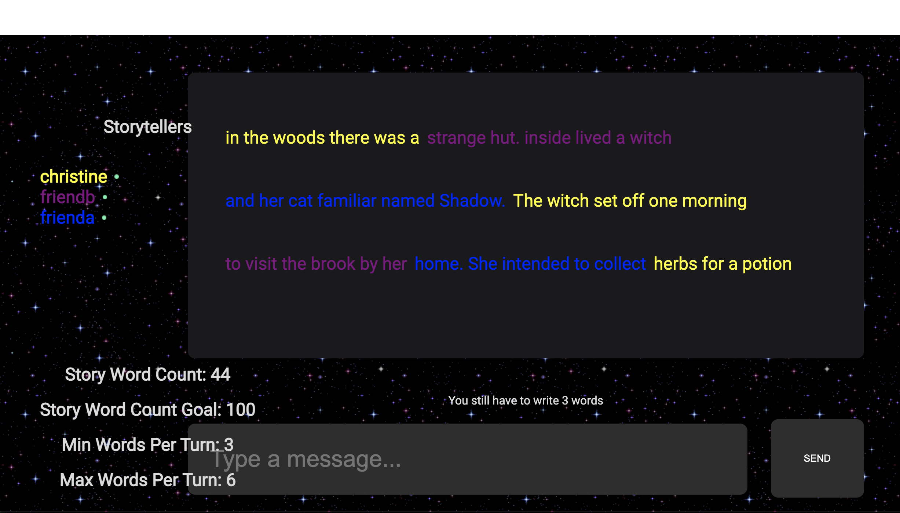

Link to Github Repo / React, Socket.io
Campfire is a collaborative storytelling webapp. It is meant to be played as a turn-based game. My co-creators and I developed the idea in quarantine, as we passed time by doing online activities together over group calls. Existing games like Tierlist Maker and Skribble.io served as our inspiration. However, as one co-creator and I were both dabbling in creative writing at the time, we were interested in building a game that had a storytelling component to it.
We started building Campfire in summer, left it for a bit, and then continued building it during a month-long hackathon in Fall. Features currently in the game include: private rooms you can create and join with anybody in the world, and enforced minimum / maximum word limits for both individual turns and the overall story.
You can try out the current iteration of Campfire at this link! The site takes a minute or so to load the first time around, for reasons that we are fixing at the moment. Invite a friend to join on the other side, with your game's special Secret Word, or try joining your own room from a new tab, under a new name!
Future additions to the game include a UI/UX revamp, export ability for the story, an enforced time limit to each turn (which should make the game aspect of this more challenging and fun), and potentially some NLP features for smart topic suggestions and supplementary graphic generation by the server.